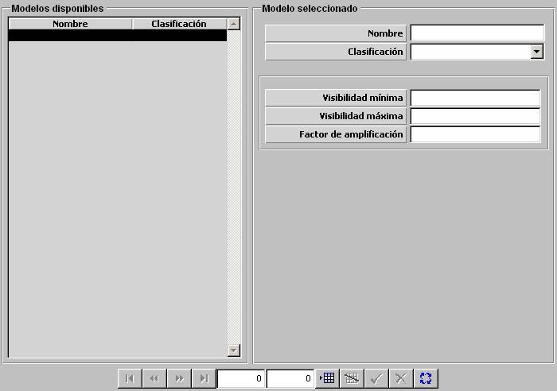

NVG

Descripción de los parámetros:
Visibilidad Mínima: Este parámetro determina la visibilidad mínima a la que este sensor puede obtener detecciones (ver Condiciones Ambientales - Tabla Horaria).
Unidades: ---
Rango: 0 – 1
Visibilidad Máxima: Este parámetro determina la visibilidad máxima a la que este sensor puede obtener detecciones (ver Condiciones Ambientales - Tabla Horaria).
Unidades: ---
Rango: 0 – 1
Factor de Amplificación: Este parámetro determina el factor por el que se multiplica la visibilidad tenida en cuenta por este sensor, siempre que esté dentro del rango anterior.
Unidades: ---
Rango: 0 – 99